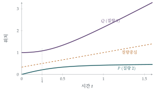

STEP III 2004, 문제 11
계속 읽기 전에 문제를 먼저 읽어 보자. 문제는 STEP Support Programme의 문제 데이터베이스에 있다: step.maths.org/questions/04-s3-q11
도입
두 물체가 서로 끌어당기거나 밀어낸다. 지구와 달, 두 별, 양성자와 전자가 그렇다. 각 물체의 운동은 다른 물체의 위치에 따라 달라지므로 방정식들이 서로 얽혀(coupled) 있고, 두 운동을 한꺼번에 구해야 할 것처럼 보인다. 뉴턴(Newton)의 위대한 단순화는 변수를 바꾸는 것이었다. 두 위치 대신, 마치 아무 힘도 작용하지 않는 것처럼 움직이는 질량중심(centre of mass)과, 질량이 바뀐 하나의 입자처럼 움직이는 상대 거리(separation)를 쓰는 것이다. 어려운 문제 하나가 쉬운 문제 두 개가 된다.
이 문제는 직선 위의 두 입자에 대해 이 분리를 실행한다. 그 과정에서 작은 기적이 일어난다. 상대 거리가 \(t\)에 대한 이차식의 제곱근으로 밝혀지는데, 그 이유는 주어진 문제와는 아무 상관이 없고 오로지 평면 위의 운동과 관련이 있다.
시작하기 전에
각 입자에 대해 뉴턴의 제2법칙을 써 보라. 각 힘은 어느 방향으로 작용하는가?
힘은 척력이므로 (왼쪽에 있는) \(P\)는 왼쪽으로, (오른쪽에 있는) \(Q\)는 오른쪽으로 민다. \[2\ddot x_1 = -\frac{2}{z^3}, \qquad 1 \cdot \ddot x_2 = +\frac{2}{z^3}.\] 두 방정식은 모두 \(z = x_2 - x_1\)을 포함하므로 서로 얽혀 있다.
차근차근 풀기
단계 1 상대 거리
두 방정식을 어떻게 결합하면 \(z\)만 포함하게 되는가?
빼면 \(\ddot z = \ddot x_2 - \ddot x_1 = \frac{2}{z^3} + \frac{1}{z^3} = \frac{3}{z^3}\)이다.■
상대 거리는 힘 \(\frac{2}{z^3}\)에 의해 밀리는 질량 \(\frac23\)인 하나의 입자처럼 행동한다. 수 \(\frac23 = \frac{2 \times 1}{2 + 1}\)은 환산질량(reduced mass) \(\frac{m_1m_2}{m_1 + m_2}\)이다.
단계 2 상대 거리의 에너지
\(\ddot z = v\frac{\mathrm{d}v}{\mathrm{d}z}\)로 놓고 변수를 분리하여 적분(integrate)하라. \(z\)와 \(v = \dot z\)의 초깃값은 무엇인가?
\(v\frac{\mathrm{d}v}{\mathrm{d}z} = \frac{3}{z^3}\)을 적분하면 \(\frac12v^2 = -\frac{3}{2z^2} + C\)이다. 처음에 \(z = 1\)이고 \(\dot z = \dot x_2 - \dot x_1 = 0 - 1 = -1\)이므로 \(\frac12 = -\frac32 + C\), 즉 \(C = 2\)이다. \[v^2 = 4 - \frac{3}{z^2}.\] (이것은 상대 거리에 대한 에너지 보존(conservation of energy)이다. 환산질량 단위당 운동 에너지와 위치 에너지 \(\frac{3}{2z^2}\)의 합이 일정하다.)
단계 3 놀랍도록 간단한 해
보여야 할 답은 \(z^2 = 4t^2 - 2t + 1\)이다. 그러니 \(z\) 대신 \(w = z^2\)을 살펴보라. \(\dot w^2\)을 \(w\)로 나타내면 무엇인가?
\(w = z^2\)이면 \(\dot w = 2z\dot z\)이므로 \[\dot w^2 = 4z^2\dot z^2 = 4z^2\Bigl(4 - \frac{3}{z^2}\Bigr) = 16w - 12.\] 미분하면 \(2\dot w\ddot w = 16\dot w\)이므로 (\(\dot w \neq 0\)일 때마다) \(\ddot w = 8\)이다. 따라서 \(w\)는 \(t\)에 대한 이차식 \(w = 4t^2 + \alpha t + \beta\)이다. 처음에 \(w = 1\)이고 \(\dot w = 2z\dot z = -2\)이므로 \(\beta = 1\), \(\alpha = -2\)이다. \[z = \sqrt{4t^2 - 2t + 1}. \qed\] (직접 확인할 수도 있다. \(\dot w^2 = (8t - 2)^2 = 64t^2 - 32t + 4 = 16(4t^2 - 2t + 1) - 12\)이다.) 두 입자는 \(t = \frac14\)에서 \(z = \frac{\sqrt3}{2}\)로 가장 가까워지고, 그 뒤로는 영원히 멀어진다.
단계 4 질량중심
\(2x_1 + x_2\)는 어떤 방정식을 만족하는가? 왜 이것이 살펴보기에 자연스러운 결합인가?
두 운동 방정식을 더하면 \(2\ddot x_1 + \ddot x_2 = -\frac{2}{z^3} + \frac{2}{z^3} = 0\)이다. 두 힘은 크기가 같고 방향이 반대이므로(뉴턴의 제3법칙) 전체 운동량(momentum) \(2\dot x_1 + \dot x_2\)는 일정하다. 그 값은 처음에 \(2 \times 1 + 0 = 2\)이고, \(2x_1 + x_2\)는 처음에 \(1\)이므로 \[2x_1 + x_2 = 1 + 2t.\] \(\frac{2x_1 + x_2}{3}\)에 있는 질량중심은 속력 \(\frac23\)으로 일정하게 움직인다. \(x_2 - x_1 = z\)와 결합하면 \[x_1 = \frac{1 + 2t - \sqrt{4t^2 - 2t + 1}}{3}, \qquad x_2 = \frac{1 + 2t + 2\sqrt{4t^2 - 2t + 1}}{3}. \qed\]

돌아보기
변수를 바꾸어 얽힘을 푼다. 방정식들의 차는 \(z\)만 포함했고, 가중합은 질량중심만 포함했다.
에너지 적분. \(\ddot z = v\frac{\mathrm{d}v}{\mathrm{d}z}\)로 쓰면 2계 방정식이 1계 방정식, 곧 에너지 보존으로 바뀌었다.
미지수를 바꾼다. \(z\)에 대한 방정식은 다루기 어려웠지만 \(z^2\)에 대한 방정식은 아주 쉬웠다.
숨은 수학
\(z^2\)이 이차식인 이유
\(\ddot z = k/z^3\) 꼴의 어떤 힘의 법칙에 대해서도, 같은 계산으로 \(\frac{\mathrm{d}^2}{\mathrm{d}t^2}(z^2) = 2\dot z^2 + 2z\ddot z = 2\dot z^2 + \frac{2k}{z^2} =\) 상수를 얻는다. \(\frac12\dot z^2 + \frac{k}{2z^2}\)이 보존되는 에너지이기 때문이다. 따라서 \(z^2\)은 언제나 \(t\)에 대한 이차식이다. 왜 그럴까?
숨은 이유는 이렇다. 평면 위에서 자유롭게, 즉 일정한 속력으로 직선을 따라 움직이는 입자를 생각하자. \(r^2 = (x_0 + at)^2 + (y_0 + bt)^2\)이므로 원점으로부터의 거리 \(r\)는 \(r^2 = (\text{이차식, 변수는 } t)\)를 만족한다. 그리고 극좌표(polar coordinates)에서 이 입자의 지름 방향 운동 방정식은 \(\ddot r - r\dot\theta^2 = 0\)이다. 각운동량(angular momentum) \(h = r^2\dot\theta\)가 일정하므로 이 방정식은 다음이 된다. \[\ddot r = \frac{h^2}{r^3}.\] 역세제곱 척력은 정확히 숨은 회전 운동의 원심(centrifugal) 효과이다. 우리 문제에서 \(z^2 = 4t^2 - 2t + 1 = (2t - \frac12)^2 + \frac34\)은 원점에서 거리 \(\frac{\sqrt3}{2}\)만큼 떨어져 지나가는 직선 위를 속력 \(2\)로 움직이는 점의, 원점으로부터의 거리의 제곱이다. 서로 밀어내는 일차원의 두 입자는 이차원 자유 운동의 그림자이다.
이체 문제
이 문제의 방법은 두 물체 사이의 힘이 상대 거리에만 의존하고 두 물체를 잇는 직선을 따라 작용하기만 하면, 일차원뿐 아니라 삼차원에서도 통한다. 질량중심은 등속으로 움직이고, 상대 위치 벡터(vector) \(\mathbf{r}\)는 \(\mu = \frac{m_1m_2}{m_1 + m_2}\)에 대해 \(\mu\ddot{\mathbf{r}} = \mathbf{F}(\mathbf{r})\)를 따른다. 중력의 경우 이것이 뉴턴이 Principia에서 푼 케플러 문제(Kepler problem)이다. 상대 위치는 타원, 포물선 또는 쌍곡선을 그린다. 지구와 태양은 둘 다 공통의 질량중심 둘레를 도는데, 이 점은 태양 내부에 있다. 지구와 달은 지구 중심에서 약 \(4700\) km 떨어진 점 둘레를 도는데, 이 점은 지구 내부에 있지만 중심에서 꽤 떨어져 있으며, 그래서 지구는 한 달 주기로 흔들린다. 천문학자들은 별에서 바로 이 흔들림을 검출하여 다른 별 둘레의 행성을 찾는다.
1969년 Francesco Calogero는 직선 위의 많은 입자가 역제곱 퍼텐셜(즉 역세제곱 힘)로 서로 밀어내는 계를 연구하여, 놀랍게도 이 계가 입자의 개수와 상관없이 정확히 풀린다는 것을 발견했다. 1975년 Jürgen Moser는 시간에 따라 변해도 고윳값(eigenvalue)이 일정하게 유지되는 행렬, 곧 7.7 절의 락스 쌍(Lax pairs)을 이용하여 그 이유를 설명했다. Calogero–Moser 계(Calogero–Moser system)는 이제 적분가능계(integrable system), 즉 완전히 풀 수 있을 만큼 보존량이 충분히 많은 계의 중심적인 예이며, 역학을 무작위 행렬, 양자장론, 솔리톤 이론과 연결한다.
사고 기술
두 양이 서로 얽혀 있으면, 얽혀 있지 않은 결합을 찾아라. 알맞은 상수로 가중한 합과 차는 종종 문제를 독립적인 조각들로 나누어 준다.
질량중심과 상대 좌표가 첫 번째 예이다. 대학에서는 같은 아이디어가 행렬의 대각화(diagonalisation, 정규 모드(normal modes), 11.2 절), 편미분방정식의 변수분리법(separation of variables), 그리고 양자역학에서 나타난다.
더 도전하기
끈으로 연결된 두 질량. STEP III 2023, 문제 9 (OCR에서 내려받는 2023년 시험지 묶음, zip 파일)을 풀어 보라. 끈으로 연결된 두 입자를 따라가며, 질량중심을 이용해 운동을 분리한다. 한 입자가 언제 뒤로 움직이는지 살펴보라.
인력. 인력 \(\frac{2}{z^3}\)으로 이 문제를 다시 풀어 보라. \(z^2\)이 여전히 \(t\)에 대한 이차식임을 보이고, 두 입자가 언제 충돌하는지 구하라.
숨은 평면. 이 문제의 운동에 대해, 원점으로부터의 거리가 \(z(t)\)인 평면 위의 직선과 쓸고 지나간 각 \(\theta(t)\)를 구하라. \(z^2\dot\theta\)가 일정하고 \((z^2\dot\theta)^2 = 3\)임을 확인하라.
케플러의 제3법칙. 질량이 \(m_1\), \(m_2\)인 두 별이 서로 거리 \(a\)만큼 떨어져 중력에 의해 질량중심 둘레를 원운동한다. 주기 \(T\)가 \(T^2 = \frac{4\pi^2a^3}{G(m_1 + m_2)}\)을 만족함을 보여라.
더 읽을거리
John Taylor, Classical Mechanics (University Science Books), 8장. 이체 문제, 환산질량, 궤도.
Daniel Kleppner & Robert Kolenkow, An Introduction to Mechanics (Cambridge University Press), 10장, 중심력에 관한 내용.
Francesco Calogero, Classical Many-Body Problems Amenable to Exact Treatments (Springer). 의욕 있는 독자를 위한 책으로, 정확히 풀리는 계의 세계를 다룬다.